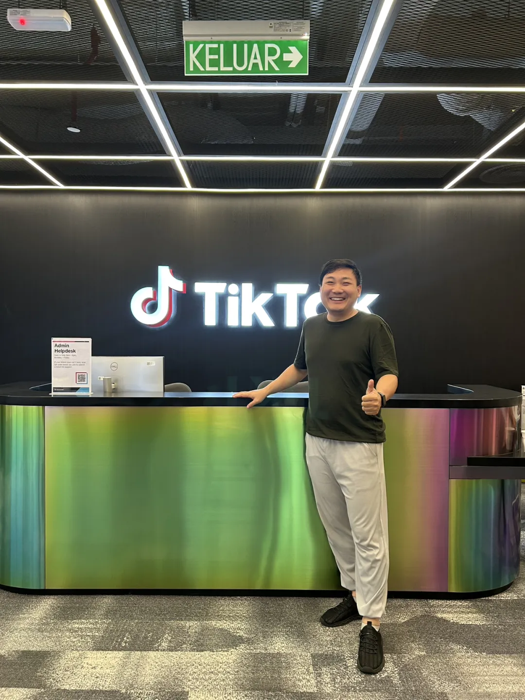
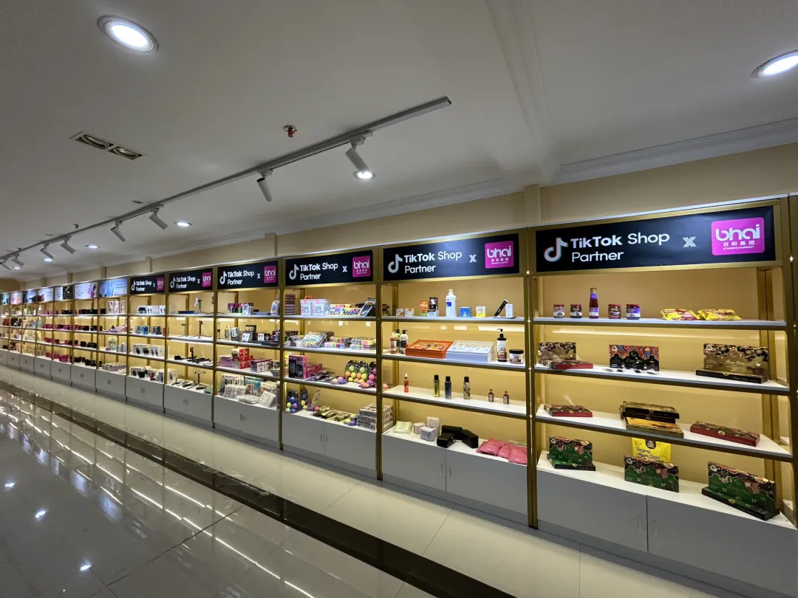
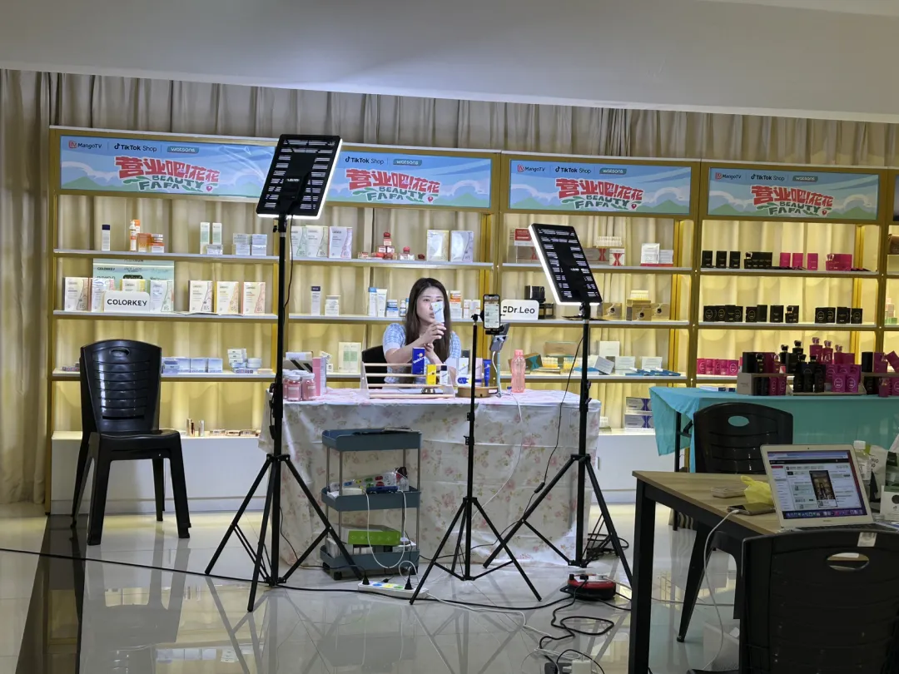
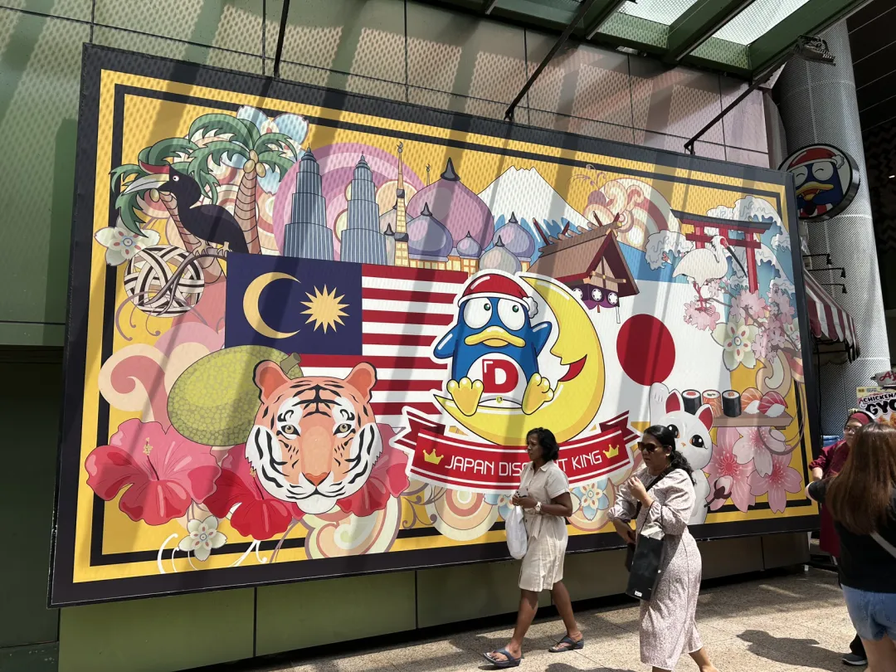
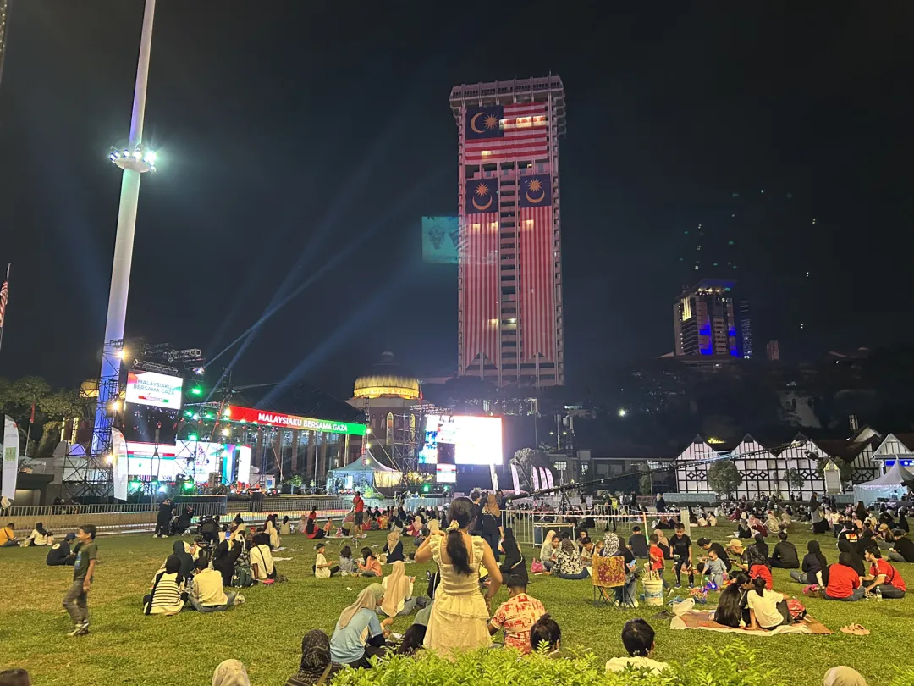
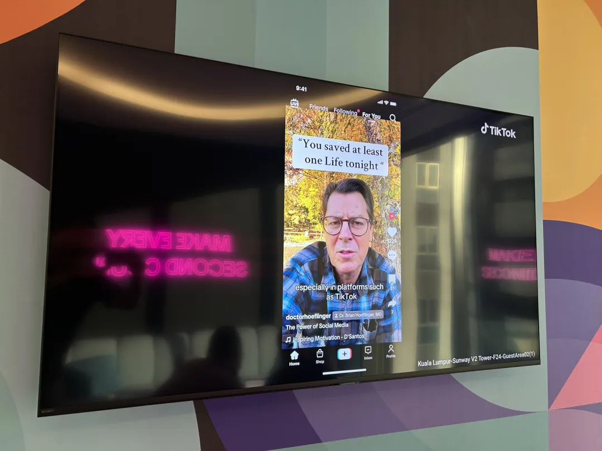
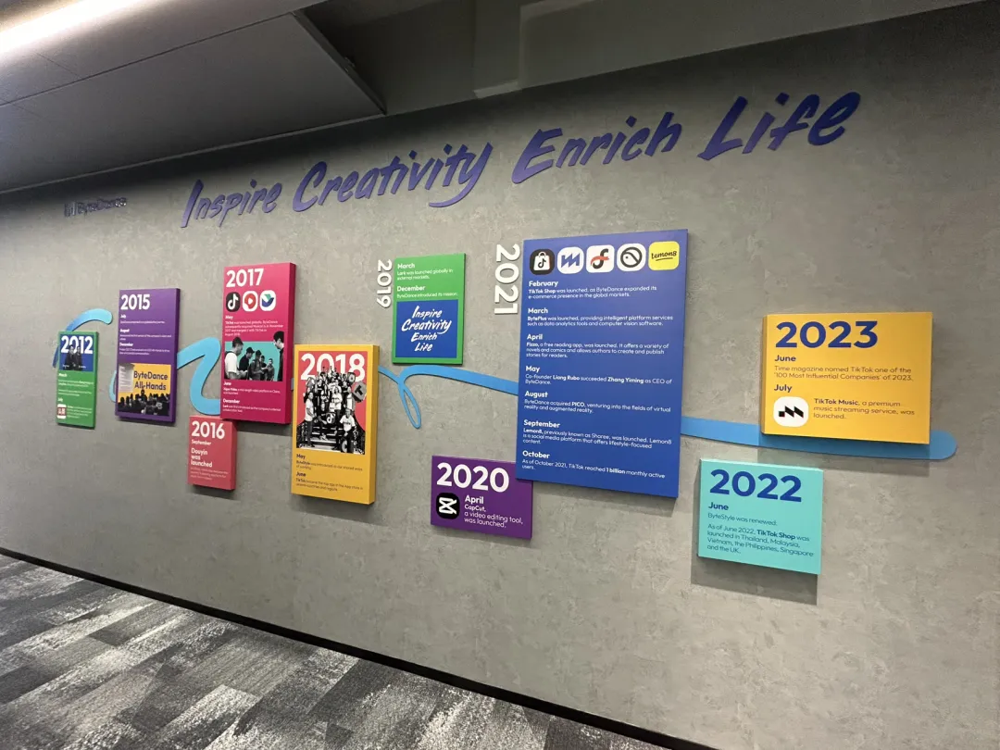

马来西亚新山市场考察｜东南亚产业与商业机会调研
Malaysia market field study — how China's algorithm meets local culture.
中国能力全球化 这不仅是全球化，更是中国能力的新进化。
和君丨海鑫汇 董立鑫 · 杭州科技六小龙·群核科技 张乐
于新加坡
8月22日，我在吉隆坡市中心，感受这座城市传统与现代的交融脉动。此行聚焦TikTok马来西亚，探索中国企业在全球市场的能力释放与本地化融合。
TikTok马来西亚不只是把中国短视频和电商技术带到本地，而是通过与马来西亚文化的深度结合，形成了更具融合性的新能力。
尤其在家居建材家具行业，TikTok借助线上流量，重塑市场格局。以下我从吉隆坡的视角，分享TikTok马来西亚的出海实践与启示。

— 1 — TikTok马来西亚：数字经济的中坚力量
吉隆坡，马来西亚的商业与文化中心，拥有发达的网络系统和数百万科技敏锐的年轻消费者，是TikTok马来西亚的理想舞台。
截至2025年初，TikTok马来西亚拥有1930万18岁及以上用户，占成年人口的72.8%，覆盖全国人口3.4亿的53.9%以上。
这反映了TikTok在马来西亚的广泛渗透，尤其在都市青年中，其短视频内容和算法驱动的个性化推荐深受喜爱。

TikTok不仅是娱乐平台，更通过TikTok Shop成为电商新势力。
2025年，马来西亚电商市场预计达到122.6亿美元，年复合增长率14.32%。TikTok Shop的日均产品搜索量超过1亿次，消费者从浏览内容到购买无缝衔接。

#JomLokal计划 是TikTok马来西亚的亮点，投入数百万令吉支持本地中小企业，推动本地产品销售年同比增长超130%。
例如，吉隆坡一家本地甜点品牌通过直播和短视频，月销售额达到五位数，粉丝破7000，展现了TikTok娱乐+购物模式的威力。
— 2 — 吉隆坡的本地化优势：文化与物流的交汇
吉隆坡的独特地位为TikTok发展提供了沃土。这座城市不仅是商业枢纽，还以多元文化和高效物流著称。马来人，华人，印度人等多族裔文化交融，塑造了消费者对美观，实用商品的偏好，尤其在家居装饰和穆斯林时尚领域。

TikTok的内容生态精准捕捉这些需求，短视频展示的家居布置灵感或节庆装饰迅速转化为购买行为。
吉隆坡靠近主要港口和工业区，国际物流便利。
难点在家居建材等大件商品的城市配送。

TikTok Shop的小件次日达服务已在吉隆坡等地区试点，结合30天免费退货政策，转化率提升80%。
TikTok还推出PayLater计划，截至2025年9月提供0%利息，提升平均订单金额60%，为本地商家和消费者创造双赢局面。
这种本地化策略，不仅依托中国技术的算法优势，更深植于马来西亚的文化与市场特性。
— 3 — 吉隆坡的本地化优势：家居建材家具行业TikTok的增长引擎
在TikTok马来西亚的电商版图中，家居建材家具行业表现突出。
数据显示，家居用品和装饰品是TikTok Shop的主要品类之一，仅次于美妆和女装。短视频和直播让消费者直观感受家具质感与设计，例如，全屋13件家具套装仅6888令吉的推广引发热烈反响。
吉隆坡消费者尤其青睐融入马来风格的家居产品，如环保建材或节庆装饰。TikTok的内容策略推动行业增长。商家通过直播展示家具组装或装修灵感，结合算法推荐，精准触达目标用户。
2025年马来西亚建材展中，80%的中国参展商通过TikTok推广产品，显示中国企业在供应链上的强大优势。
TikTok Shop的GMV商品交易总额在家居类目增长显著，2024年马来西亚用户在平台消费约27.24亿美元，同比增长104%，家居建材贡献重要份额。
— 4 — 线上流量：重塑消费习惯的核心
TikTok马来西亚的成功，离不开对线上流量的精准掌控。2024年，平台月活跃用户稳定在1900万以上，同比增长约10%，其中吉隆坡用户占比显著。
TikTok的算法通过兴趣标签和互动数据，将家居建材内容推送给高意向用户。视频完成率高达70%，带动购买转化。直播电商尤其火爆，2024年TikTok Shop直播销售额占平台GMV的40%以上。

本地化内容是流量增长的关键。
TikTok鼓励商家制作融入马来西亚文化的短视频，如使用当地语言或展示传统节庆场景，用户停留时长增加30% 。
例如，家居品牌通过直播讲解马来风格家具的搭配技巧，吸引了大量年轻消费者。
TikTok还与本地KOL合作，2024年KOL带货销售额同比增长200%。
— 5 — 中国能力与马来西亚机遇的双重奏
TikTok马来西亚的实践证明，中国企业的全球化不仅是技术的输出，更是能力与本地化的深度融合。
在吉隆坡，TikTok通过精准流量驱动和本地化内容策略，推动家居建材家具行业蓬勃发展，尤其在可持续材料领域，满足消费者对环保和文化共鸣的需求。

2024年，TikTok Shop家居类目GMV增长104%，直播销售额占40%以上，展现了中国算法优势与马来西亚市场的完美结合。
未来，TikTok需持续深耕本地文化，优化供应链，确保长期竞争力，为中国企业的出海树立标杆。
这不仅是全球化，更是中国能力的新进化。
本文内容整理自海鑫汇海外考察记录，首发于海鑫汇官方公众号（2025年8月）。 查看公众号原文 →